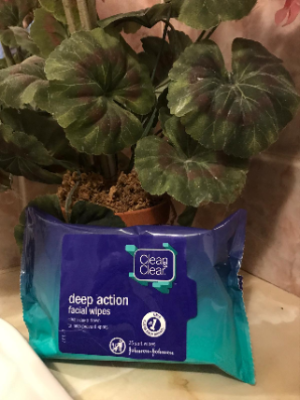

Top Product Picks
All of the products listed below we have tried and experienced the best results with. Additionally these are easily accessible, cheaper than most and require a small amount to be effective.
Clean & Clear Exfoliating Daily Wash
Clean & Clear Exfoliating Daily Wash
Available in all pharmacies and supermarkets
€3.99
A gentle cleanser which removes dirt, make up and dead skin cells without stripping your natural barrier. Mix with lukewarm water and apply all over face. Leaves skin feeling soft and smooth. Use twice daily, morning and night for best results.
Clean & Clear Black-head Clearing Daily Mask
Clean & Clear Black-head Clearing Daily Mask
Available in all pharmacies
€4.49
A smooth purifying mask which removes excess oil and clears pores. Apply to a clean dry face. Use twice weekly for best results.
Clean & Clear Oil-free Moisturiser
Clean & Clear Oil-free Moisturiser
Available in all pharmacies
€4.49
A hydrating, smoothing moisturiser which helps balance the oil production and reduce the appearance of pores. Moisturiser is the most important product for tackling oily skin. This moisturiser has been proven to not overload the skin with oil. Use twice daily.
Dunnes Stores Cotton pads

Dunnes Stores Cotton pads
Available in Dunnes Stores supermarkets
€0.70c
Cotton pads are a go-to for removing make up on any part of the face as they are gentle and easy to use. We recommend these for applying facial cleansers instead of face-cloths, facial brushes or towels as they retain bacteria which can spread around your face, causing breakouts.
Clean & Clear Deep Action Facial Wipes
Clean & Clear Deep action Facial Wipes
Available in all pharmacies
€3.50
They are ideal for removing make up. Good to clean your face if you are in a rush.